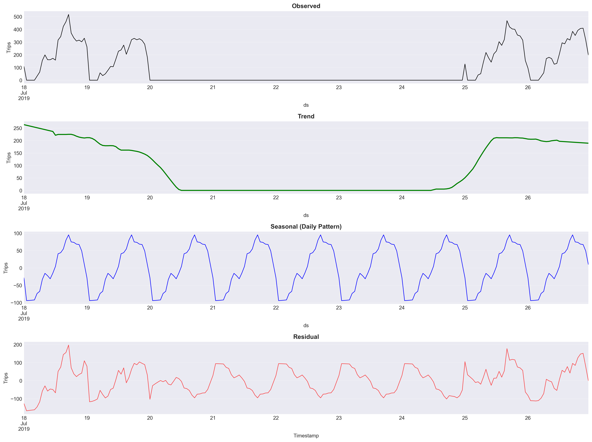
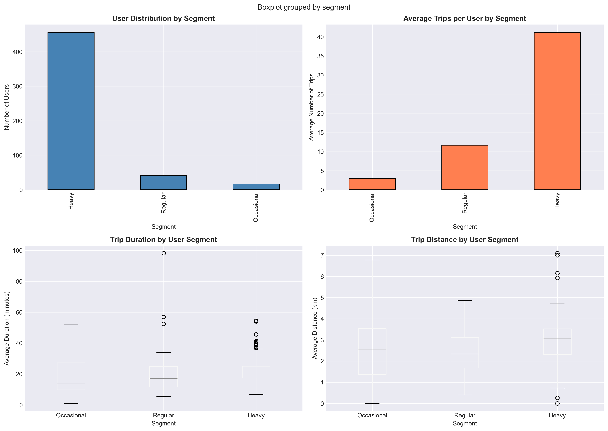
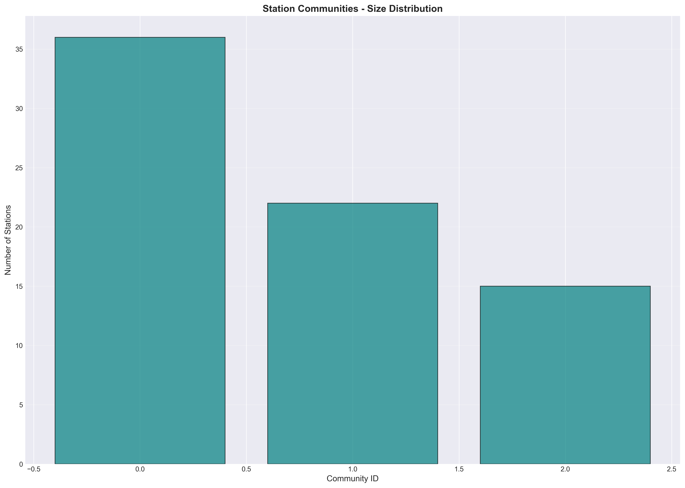

Tartu Smart Bike · July 2019
Interactive Findings & Visual Gallery
Explore the key results from temporal, spatial, statistical, machine learning, and network analyses of the Tartu Smart Bike system. All assets are generated from the open dataset and live in this repository.
Time Series & Forecasting
Seasonal Decomposition
Forecast (SARIMA)

Statistical Insights
User Segmentation
Community Detection
Centrality Metrics

Station Network

Machine Learning
User Behavior Clustering

Anomaly Detection

Interactive Maps & Charts
GPS Heatmap
How to reproduce
Install dependencies and run:
pip install -r requirements.txt python scripts/01_data_preprocessing.py python scripts/02_run_eda.py
streamlit run dashboard.py